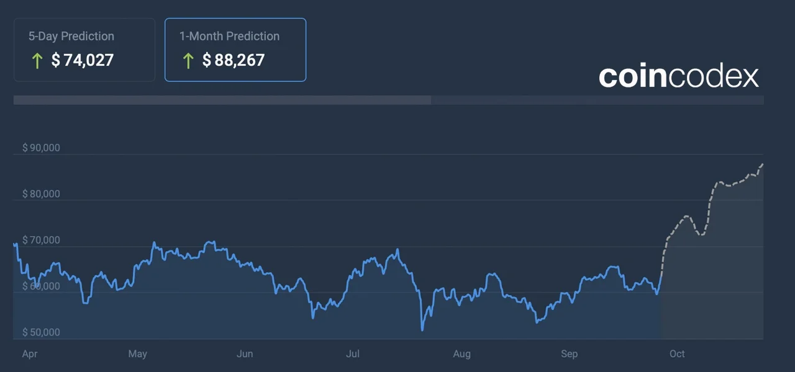
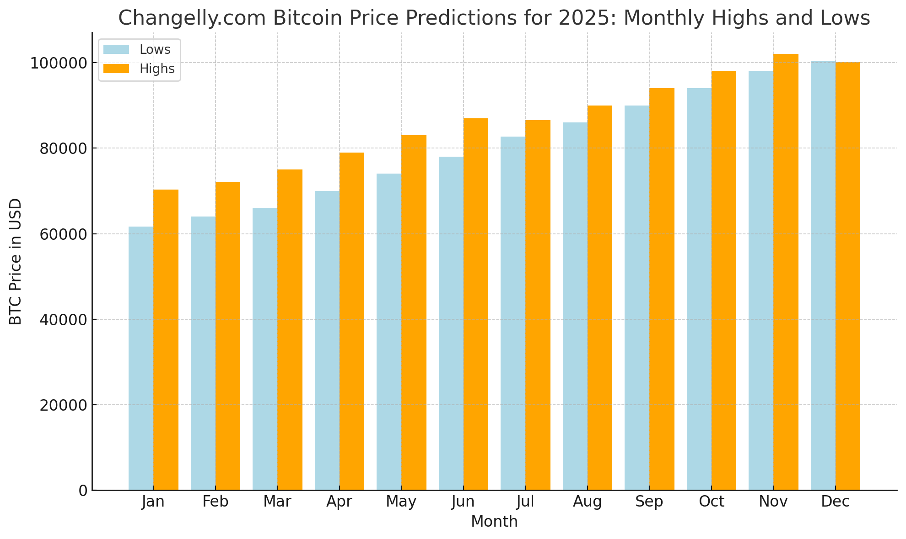

13 octu, 2024
Bitcoin mantiene tendencia alcista y logra una nueva marca por arriba de los 63.000 USD
El bitcoin ha sentado las bases para la creación de muchas de las monedas digitales existentes en el mercado y ha marcado un momento crucial
para las soluciones de pago digital.
La criptomoneda más popular del mercado, bitcoin, registró ganancias en las últimas horas y mantiene su racha positiva, sin embargo,
los analistas consideran que la moneda puede tener una mayor volatilidad en los próximos días por la especulación sobre otro anuncio de estímulo fiscal en China y el vencimiento de opciones de BTC por valor de 1.1 mil millones de dólares. Pese al escepticismo, hay quienes han apostado por el bitcoin: El Salvador se convirtió en el primer país en adoptar esta criptodivisa
como moneda legal el 9 de junio de 2021 y Honduras Próspera, una zona especial autónoma centroamericana, también ha hecho lo propio El costo de la criptomoneda bitcoin para este día a las 09:00 horas (UTC) es de 62664.22 dólares. Esto quiere decir que la moneda digital reportó un cambio de 3.12% en las últimas 24 horas, así como un movimiento de -0.11% en la última hora.Por su nivel de capitalización, esta moneda digital ocupa la posición #1 entre las más populares.
El flujo histórico de inversiones impulsa a bitcoin a máximos nunca antes vistos
Este 12 de marzo bitcoin ha logrado un nuevo máximo histórico, superando los valores anteriores y reafirmándose como la criptomoneda más importante en el mercado, acercándose a los 73 mil dólares. Este récord se obtuvo en medio de un flujo sin precedentes de inversiones hacia las criptomonedas, un acontecimiento notable para el sector financiero digital.
El aumento en el valor de bitcoin ocurre en un contexto donde hay un entrante masivo de capital hacia las criptomonedas, lo que indica un creciente interés y confianza de los inversores en estos activos. La subida del precio beneficia no solo a bitcoin sino que también tiene un impacto positivo en el mercado de las criptomonedas en general, favoreciendo una mayor estabilidad y visibilidad, de acuerdo a un análisis de Bloomberg.
Expertos financiaron este aumento a diferentes factores, como la adopción institucional de las criptomonedas, la búsqueda de alternativas de inversión debido a la incertidumbre económica mundial y la innovación continua en la tecnología blockchain que respalda a bitcoin y otras divisas digitales. Esta combinación de factores ha creado un entorno propicio para el crecimiento continuo en el valor de Bitcoin.
Cómo adquirirlas
Para adquirirlas e intercambiarlas se utilizan portales especializados. Su valor varía en función de la oferta, de la demanda y del compromiso de los usuarios, por lo que puede cambiar más rápido que el dinero tradicional, pero mientras más gente esté interesada y quiera comprar determinada moneda, mayor será su precio.
No obstante, quien invierte en este tipo de monedas digitales debe tener muy claro que esta forma trae consigo un elevado riesgo al capital, pues, así como puede haber un incremento, también puede tener inesperadamente un desplome y acabar con los ahorros de sus usuarios
Para almacenarlas, los usuarios deben contar con un monedero digital o wallet, que en realidad es un software a través del cual es posible guardar, enviar y hacer transacciones de las criptomonedas. En realidad, este tipo de monederos sólo guarda las claves que marcan la propiedad y el derecho de una persona sobre cierta criptomoneda, por lo que estos códigos son los que en realidad se deben proteger.
Predicciones del precio de Bitcoin para finales de 2024 y el pronóstico para 2025
Durante la última semana, el bitcoin ha estado fluctuando entre $59,019 y $63,794 por unidad. Aunque los precios han disminuido ligeramente—bajando un 1.29% en lo que va de octubre—todavía hay mucho optimismo de que ‘Uptober’ esté a la altura de su reputación. Después de todo, históricamente octubre ha sido un buen mes para bitcoin, con entusiastas esperando ansiosamente un posible rally a medida que nos adentramos en los próximos meses.
12 octu, 2024
Predicciones para el fin de 2024 sugieren un posible avance más allá de $74K
Actualmente, el bitcoin se cotiza a $62,735 por moneda, manteniendo una valoración de mercado de $1.31 billones. Esto coloca a bitcoin cómodamente en los primeros puestos de los activos globales—es ahora el décimo más grande del mundo por capitalización de mercado, junto a grandes corporaciones e incluso superando el valor de algunas economías enteras.
Muchos analistas están confiados en que el mercado seguirá tendiendo al alza a medida que avanza el mes. A pesar de cierta volatilidad, la capacidad del bitcoin para mantener su posición en el rango de los $60,000 sugiere un fuerte apoyo tanto de inversores institucionales como minoristas. Algunos pronósticos apuntan a que bitcoin superará los $65,000, con más escenarios alcistas prediciendo que podría incluso desafiar la marca de $80,000 a $100,000 antes de que termine el año.
Según las predicciones de precios de bitcoin (BTC) de coincodex.com, se anticipa que BTC rompa la barrera de los $74K en menos de una semana, con una previsión a 30 días de $88,267. Eso es un salto de más del 40% desde su posición actual. Mirando hacia 2025, proyectan que bitcoin podría alcanzar un pico de $104,738, con un piso de $63,654. Para 2026, podríamos ver un mínimo de $84,756 y un máximo que asciende a $177,384.

Mientras tanto, changelly.com tiene su propio pronóstico. Para octubre, ve a bitcoin oscilando entre $61,473 y $76,664.73. En noviembre, predicen una ligera caída, con precios que oscilan entre $58,138.52 y $77,133.95. Diciembre, aunque se espera que sea más estable, parece más bajo con un rango de $61,097.32 a $63,022.10. Estos números insinúan tanto un crecimiento potencial como estabilidad en el futuro cercano.

Según las métricas de changelly.com para 2025, se espera que bitcoin mantenga un crecimiento constante cada mes. Las estimaciones de enero sugieren precios entre $61,651.60 y $70,344.69. Para julio de 2025, bitcoin podría aumentar a un rango de $82,730.07 a $86,595.37. Al llegar a diciembre de 2025, las previsiones insinúan un máximo de $100,137.61 y un mínimo de $100,295.47. Con un ROI proyectado de 61.1%, el año podría ver un impulso constante al alza.
Según las métricas de changelly.com para 2025, se espera que bitcoin mantenga un crecimiento constante cada mes. Las estimaciones de enero sugieren precios entre $61,651.60 y $70,344.69. Para julio de 2025, bitcoin podría aumentar a un rango de $82,730.07 a $86,595.37. Al llegar a diciembre de 2025, las previsiones insinúan un máximo de $100,137.61 y un mínimo de $100,295.47. Con un ROI proyectado de 61.1%, el año podría ver un impulso constante al alza.
Según las últimas probabilidades de Polymarket, los apostadores le otorgan a bitcoin (BTC) un 29% de probabilidad de alcanzar los $70,000 este mes. La probabilidad de que BTC llegue a $67,500 se establece en un 54% para octubre. Por el lado negativo, hay un 37% de probabilidad de que caiga a $57,500. Esta apuesta concluye el 31 de octubre, con $599,477 en volumen al momento de la prensa. Los apostadores de Polymarket también colocan las probabilidades de que BTC alcance un nuevo máximo histórico este año en un 57%.
Síguenos en nuestras redes sociales